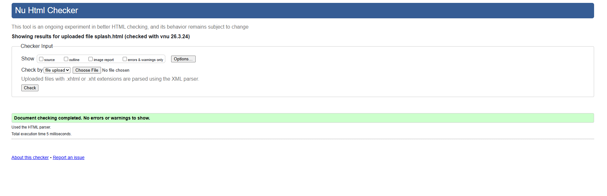
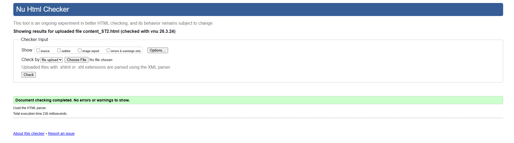

Splash Screen – Validation Report
✔ No Errors – Validated Successfully
The Splash Screen (index.html) was submitted to the W3C Markup Validation Service for
testing. The page completed validation with no errors, confirming that the HTML structure is
correctly written and meets current web standards.
W3C Markup Validation Service.
The page passed with no errors.

Back to Page Editor
Action Impact Simulator – Validation Report
✔ No Errors – Validated Successfully
The AIS page (ais.html) was submitted to the W3C validator and returned
no errors. The validator confirmed that all ARIA attributes
(role="checkbox", aria-checked, aria-live,
role="region") are used on appropriate elements, which was a particular
concern given the heavy use of ARIA on the action cards.

Back to Page Editor
Content Page (Reforestation) – Validation Report
✔ No Errors – Validated Successfully
The Reforestation content page (content_ST2.html) was validated with the W3C
Markup Validation Service and returned no errors.
